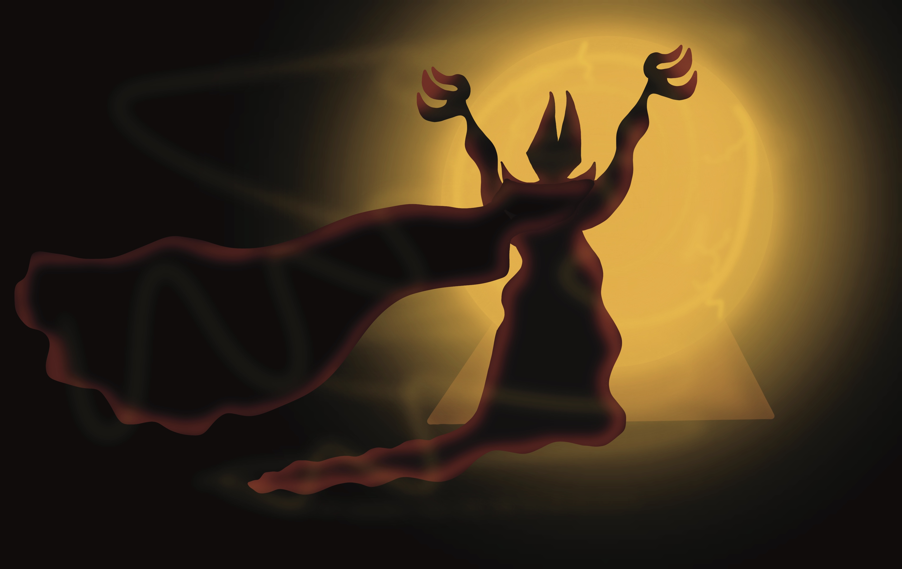

Many eons ago and evil was born. An evil so powerful it could destory entire realms. The Nameless Horror was given the neame to this creature becasue of its ruthless and inability to have compassion towards any living thing. A physical name could never be bestowed upon this creature becuase giving it a “mortal name” would make it human and it is far from being human. It has piercing dark red eyes, talons instead of hands, wears a thick black robe that resembles black tar. The creature lives inside of its decaying and fortified fortress just east of the land of Northwood. Everyday The Nameless Horror peers into his enchanted crystal yellow ball. Looking for the one object that would allow him to not only rule Northwood but all the realms in its existence and punish all those who stand in his way!
